| 日付 | 2008年3月22日（土） |
|---|---|
| 山域 | 近畿の山 |
| メンバー | 単独 |
| 山行形態 | 日帰り |
| アクセス | 電車 |
| ルート (Map) | 比良駅→大山口→北比良峠→武奈ヶ岳→コヤマノ岳→金糞峠→大山口→比良駅 |
大学院時代の研究室の同窓会があるので実家に帰ってくる。
いい機会なので、ずっと気になっていた滋賀県の名峰・武奈ヶ岳へ行ってみることにする。
早朝に京都から湖西線を北上する。
車窓からは琵琶湖の向こうに日が昇るのが見える。
下に見えるのは三上山のシルエット。
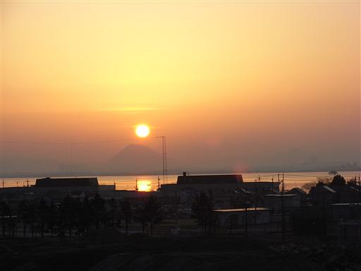
6:34 比良駅到着。
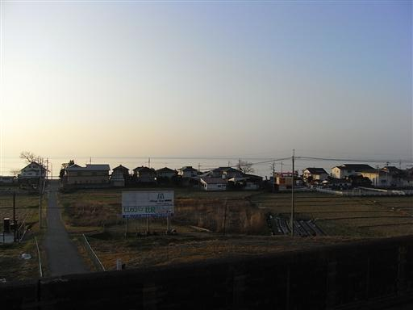
比良駅からは比良山系の山々が望める。
めざす武奈ヶ岳は奥の方にあるので、ここからは見えない。
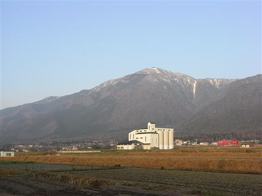
車道を歩いて登山口まで行く。
長い車道歩きだが、車は全く通らない。
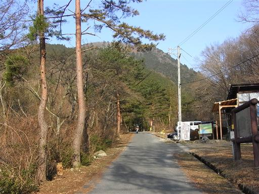
橋を渡って登山道に入っていく。
周りには他の登山者もちらほら見える。

登山道には結構雪が残っている。
上の方はもっと雪が多そうだが、登山者が多いので気にせず登る。
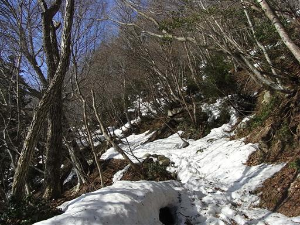
樹木の間からは周りの山々を見渡せる。
夏だと何の変哲もない山も、雪が積もると美しい。
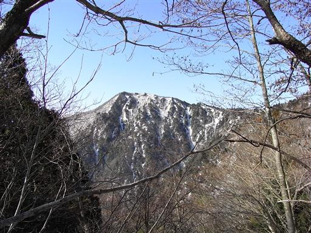
右手に北比良峠が見えてきた。
この辺りの地形は実にゆったりとしている。
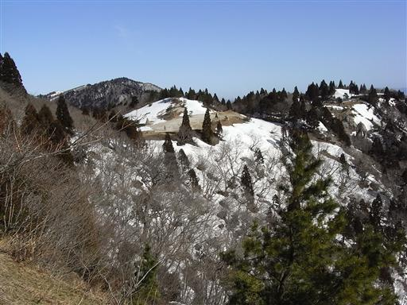
北比良峠に到着。青い空、白い山に囲まれた広々とした平地。
非常に静かで、山上の楽園という表現がぴったり。
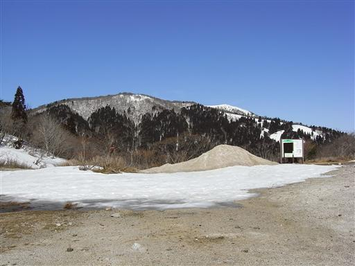
水たまりは凍りついている。昼間は暑いけれど、朝は相当に冷えそう。
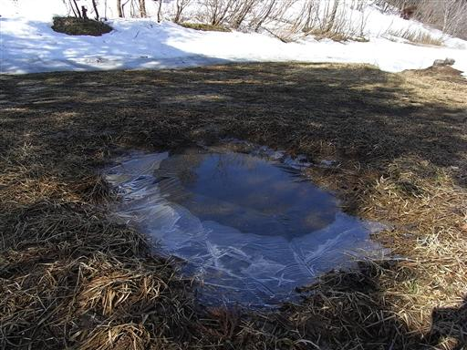
残念ながら眼下に広がる琵琶湖は見えない。
上空は晴れているが、近江盆地には靄がかかっている。
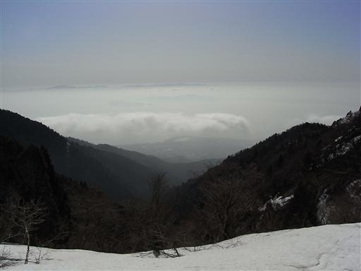
北比良峠から道を見つけて歩き出す。
この辺りは地形が複雑でルートがわかりづらい。
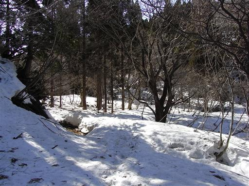
八雲ヶ原に到着。関西では珍しい高層湿原も、一面雪原になっている。
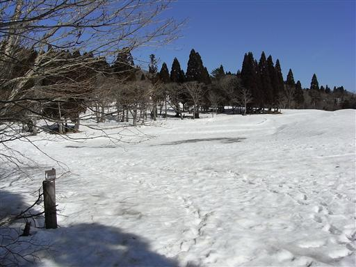
所々に大きな穴があいていて溝になっている。
上から見るとただの雪原のため、踏み抜くと危険。
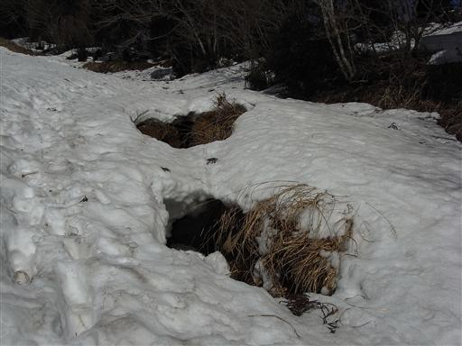
だだっ広い雪原を適当に登っていく。
この辺りは昔スキー場だったようだ。
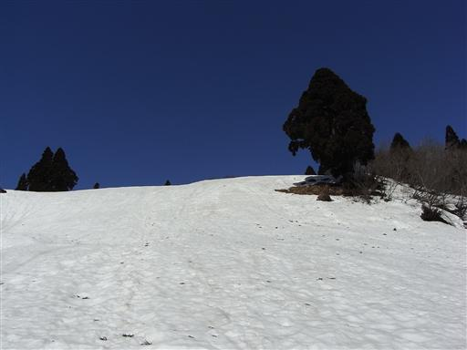
振り返ると、靄の向こうにかすかに鈴鹿の山が見える。
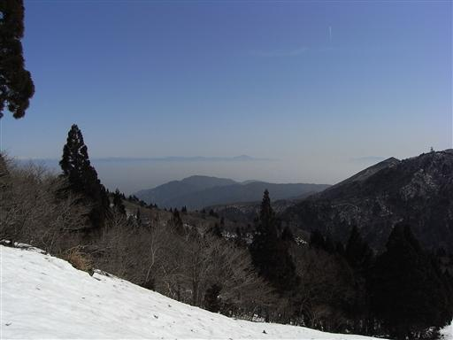
木々の周りにはどこも大きな穴があいている。
雪は木の周りから少しずつ解けていく。
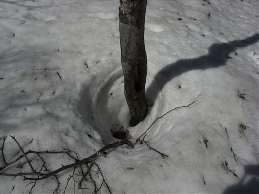
目の前にようやく白く光る武奈ヶ岳が姿をあらわした。
山頂までもう一登り。
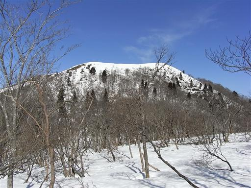
台形の形をした山の一端に踊り出る。
本日は快晴。山頂部には樹木が無く、最高の展望が期待できそう。
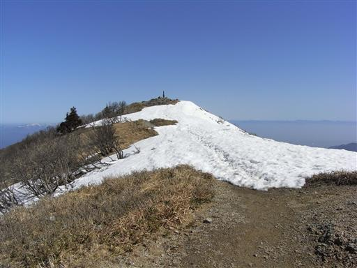
10:26 武奈ヶ岳山頂到着。標高1214m。
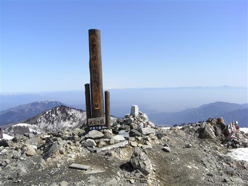
山頂には小さな地蔵が並んでいる。
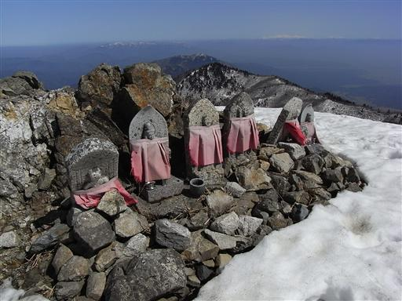
山頂には一人だけ先客がいた。
周りを歩いていた登山者はどこへ行ってしまったんだろう？
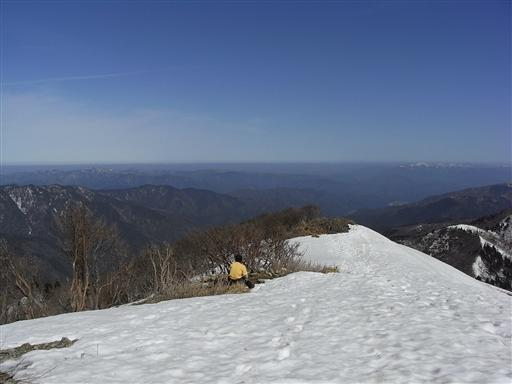
山頂からは遮るものの無い展望が得られる。
西は丹波山地の山々がどこまでも続いている。
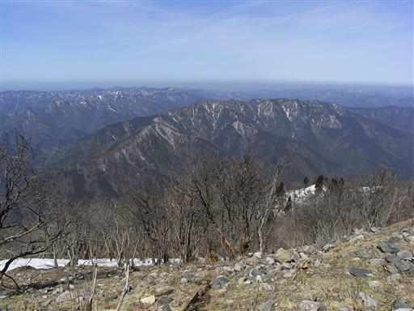
南には比良山系の蓬莱山が存在感を示している。
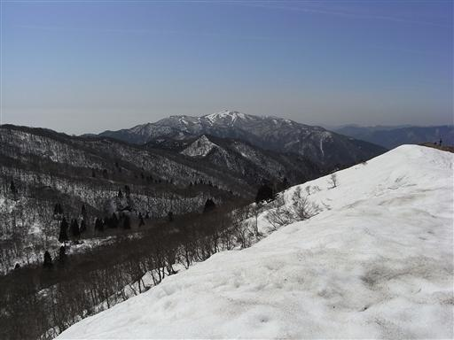
遥か彼方に真白な白山が望める。
その右に見える白い山ふたつは乗鞍と御嶽のようだ。
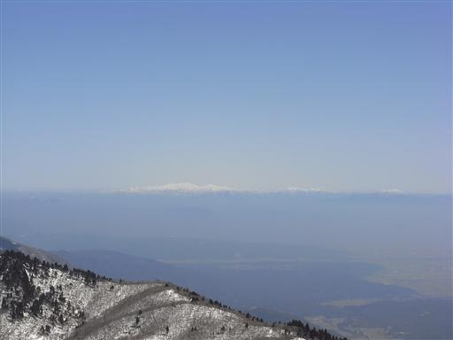
しばらくすると登山者が続々と集まってきた。
さほど寒くないので1時間ほどのんびり休憩し、山頂を発つ。
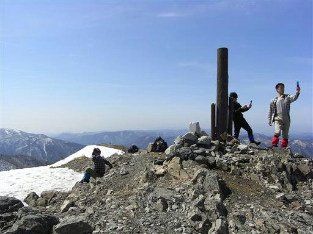
お隣のコヤマノ岳に到着。この辺りは全く足跡が無い。
選んだ登山道が悪かったようだ。
なぜか皆ワサビ峠経由の道を選ぶらしい。
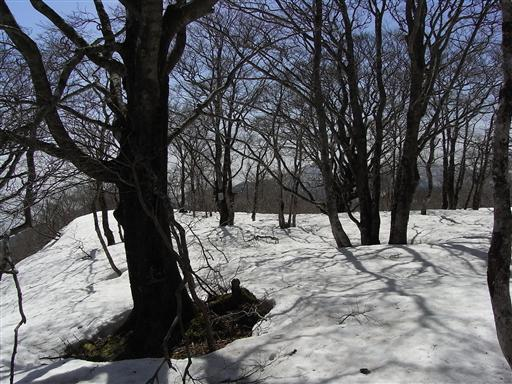
下山道では巨大な木があちこちで見られる。
これだけ巨大樹がたくさん見られる森は、関東近辺ではあまり無い。
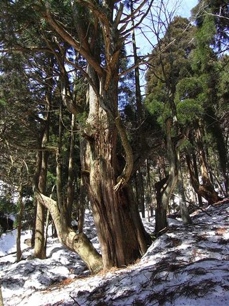
雪が解けた水は激流となって沢を下っていく。
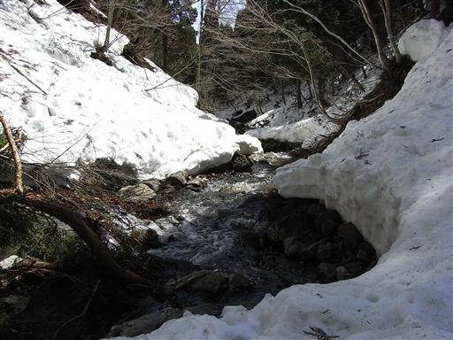
眼下に琵琶湖が見えてきた。相変わらず下界の展望はパッとしない。
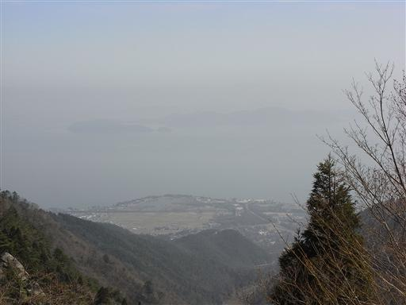
この辺りの沢は非常に急峻な地形をしている。
八雲ヶ原付近とは対照的だ。
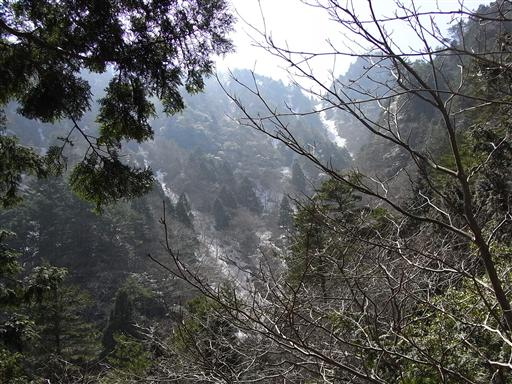
青ガレに到着。巨大石がたくさん転がっている。
上から石が落ちてきたらたまらないので、さっさと通りすぎる。
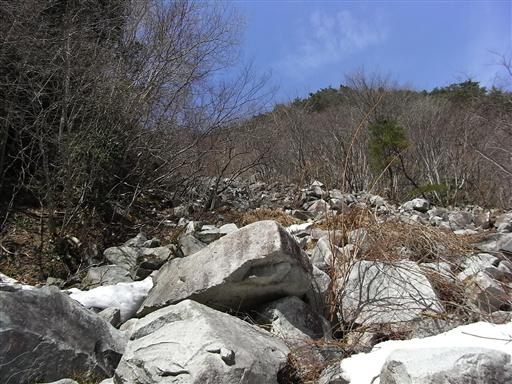
下山。今朝の登山道入口付近まで戻ってくる。
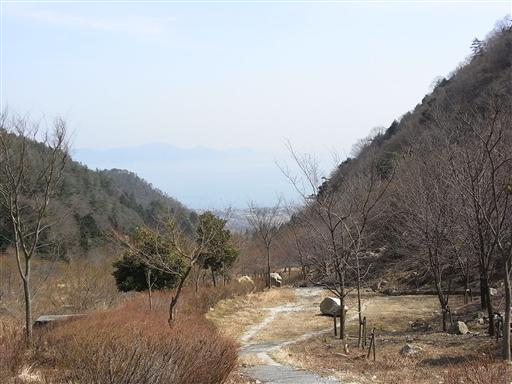
田園風景が広がる。こんな景色を見るのもずいぶん久しぶり。
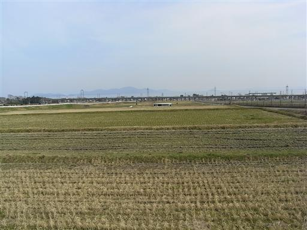
14:25 比良駅到着。
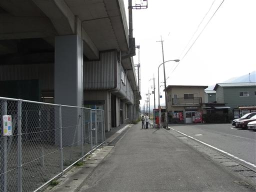